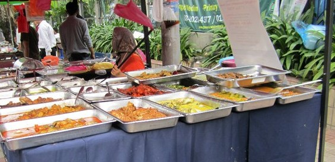

It was unexpected trip to Malaysia. Let's back it up. I had plan to visit one of my friends in Singapore but then I realized 2 weeks in Singapore was way too much. Don't get me wrong. Sinagpore is such a clean place. However, I wasn't going to spend all my time in the city without at least visiting one other cities. If you recalled my intention was at least to visit 2 cities in a year. There are a couple of things I wish I should have done when I was in Malaysia. If you ever going there and don't know anyone who lives there be sure to book yourself tours to get around. I thought I could figure it out since I could in Singapore. I underestimated how busy the streets are and believe it or not, how scared I was just to cross the street.
After much debate on where to head to in Malaysia, I decided to check out KL and Penang. I found it KL was much friendlier and felt safer as a woman traveling solo. At one point, in Penang I was almost got rob. That was during day time when I was trying to cross the bridge from one end to the another. It was in the city. Aside from that, I learned do and don't compared to my other travels. Do always be aware of your surrounding. Yes, I was awared that I almost got rob so I went to the direction back where there are more people. Don't assume that google map will leave the way and you will eventually find your way to your destination. It might work when you are in US but some countries I found it, it was hard there were so many side streets and one wrong turn you have no clues where you are. If you are ever in doubt, in hailing a cab don't get in. Always trust your instinct.
Regardlesss, I had wonderful time there. I will write more details on where I went and what I did. Stay tune. 